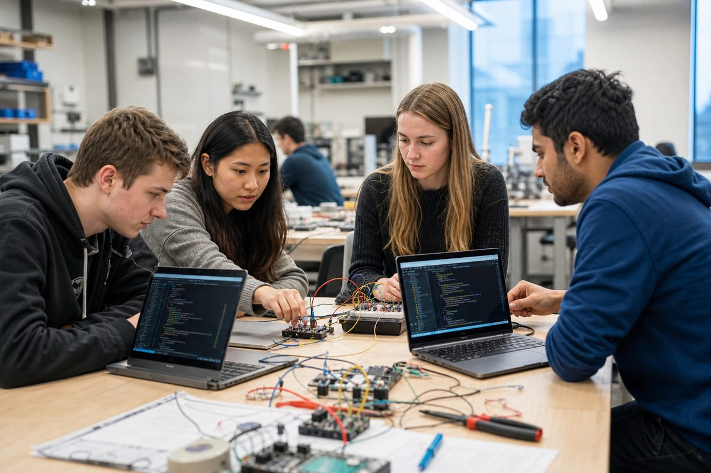
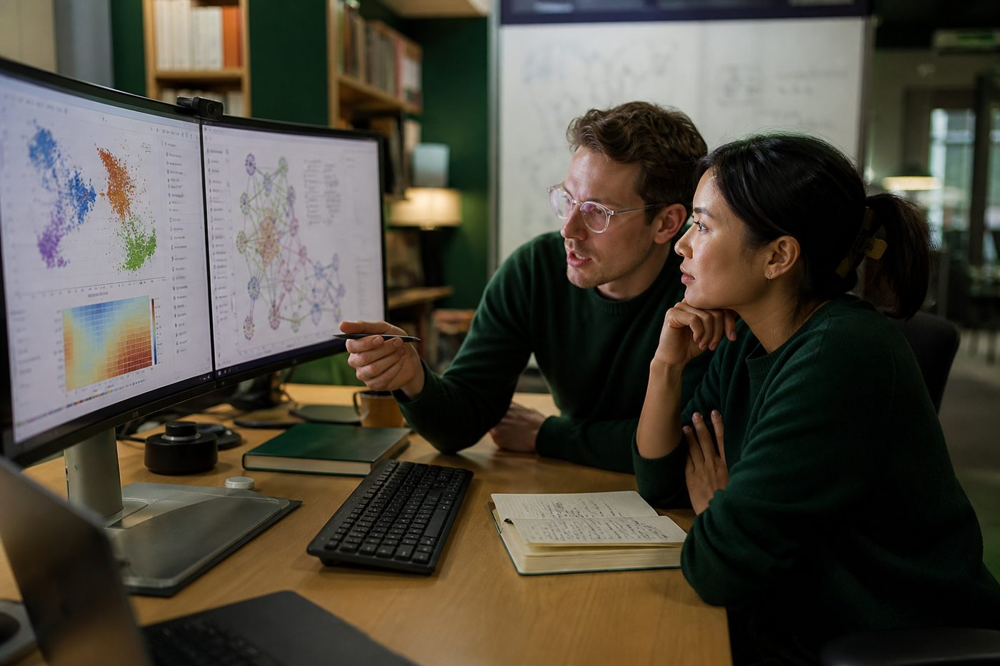
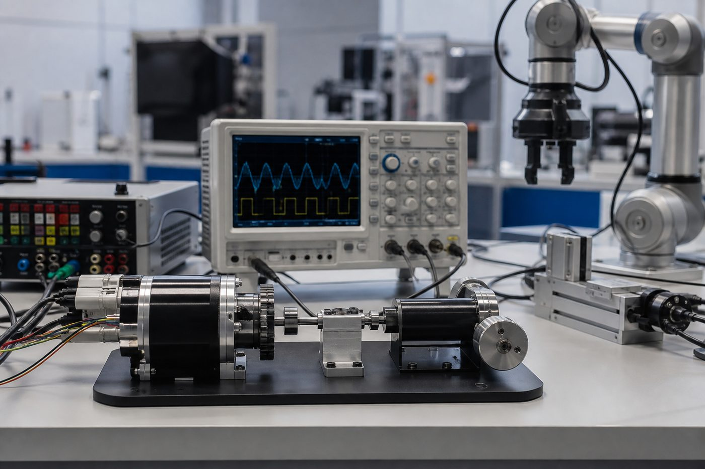

AI Engineering
Deep learning, NLP, computer vision, and intelligent systems for data-driven engineering.
View detailsComputer Engineering · Ahmadu Bello University
We prepare computer engineers across AI Engineering, Control Engineering, and Networking Engineering — rooted in ABU’s tradition of excellence since departmental autonomy in 2017.
Welcome
Welcome to the Department of Computer Engineering at Ahmadu Bello University, Zaria. From an engineering lineage that began with the University in 1962, through NUC approval of Electrical and Computer Engineering in 2010/11, to full autonomy in November 2017, our programme is built on the NUC Benchmark Minimum Academic Standards (BMAS) and international best practice.
Under the leadership of Dr. Engr. Mrs. Basira Yahaya, we focus on ICT and systems, networks and security, artificial intelligence, control and intelligent systems, embedded systems, and computer vision — preparing graduates to compete in a global Computer Engineering ecosystem.
Our history & mission
Specializations
Undergraduate students select modules under one of three specializations in the senior years of the five-year B.Eng programme.
Deep learning, NLP, computer vision, and intelligent systems for data-driven engineering.
View details
Control theory, automation, robotics, and UAV/drone platforms for cyber-physical systems.
View details
Computer systems, networked infrastructures, and security-aware ICT architectures.
View detailsLabs & applied themes
Beyond the three senior specializations, teaching and projects span language intelligence, neural systems, connectivity, automation, and UAV platforms.


A continuous look at the environments where our students and staff practice Computer Engineering.
Text intelligence, language understanding, and applied NLP pipelines for African and global contexts.
Neural architectures, model training, and GPU-backed experimentation for perception and prediction.
Switches, routing, secure architectures, and resilient campus-to-cloud connectivity.
Feedback design, instrumentation, and intelligent automation for cyber-physical plants.
Unmanned aerial platforms for sensing, autonomy, and control — where navigation, embedded hardware, and intelligent algorithms meet.
Programmes
From the five-year B.Eng to PGD, M.Sc, and Ph.D study in Computer Engineering.
Foundational and specialization training aligned with NUC BMAS.
Duration: 5 years
Postgraduate diploma for advanced professional and academic progression.
Full-time pathway
Coursework and supervised research culminating in a thesis.
Min. 3 semesters
Original research contribution under faculty supervision.
Research degree
At a glance
News & Events
Institutional highlights, seminars, and student opportunities.

Spotlight on departmental leadership advancing inclusion in engineering education.

ABU celebrates female students’ participation and excellence in the Huawei Global ICT Competition.

Reflecting on growth since full autonomy in November 2017.
Covers artificial intelligence with strong pathways in Deep Learning, Natural Language Processing, computer vision, and intelligent systems. Graduates design and evaluate AI-enabled solutions for industry, research, and public-sector use.
Available for selection at 400 Level and 500 Level.
Covers control theory, intelligent systems, automation, robotics, embedded control, and drone / UAV platforms. Students model, analyse, and design feedback systems for cyber-physical and autonomous applications.
Available for selection at 400 Level and 500 Level.
Emphasises computer systems, networked infrastructures, network security, and scalable ICT architectures — from campus switching fabrics to secure digital services.
Available for selection at 400 Level and 500 Level.